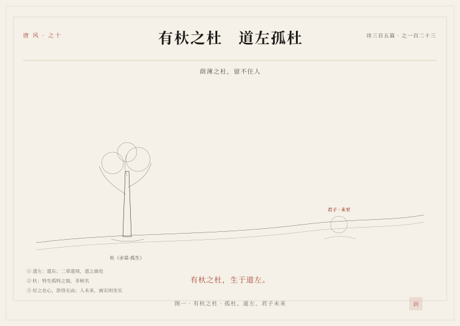
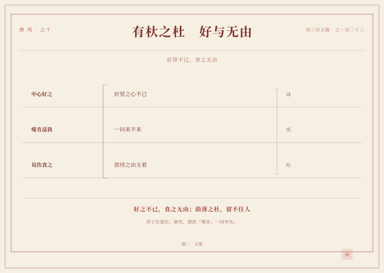

第一百二十三篇 有杕之杜
唐风 · 之十 SJ123
朗读 · 普通话
依经文原文朗读，章次不读出；配古琴底乐，不改速、不加拖腔。全库同一音色（豆包 TTS），非播音员录制。
一 解题
诗三判：
- 谁在说：寡弱而求贤之人。见道左一株孤生之杜，荫不足以休息；念彼君子，心中好之，却无由以饮食款待，恐其不肯顾我而来。
- 说什么事：二章只换「左／周」「适我／来游」，「中心好之，曷饮食之」两句两章重出。树孤生道旁，人孤待君子；所同者好之之心，所缺者款待之由。
- 为何编在此：122《无衣》言请命于天子，123
言寡特无辅。唐风至此由「求命于外」转向「求贤自辅」，是收卷前承上启下之一篇。
《毛序》：“《有杕之杜》，刺晋武也。武公寡特，兼其宗族，而不求贤以自辅焉。”
朱子《诗集传》：“比也。左，东也。噬，发语词。曷，何也。此人好贤，而恐不足以致之。故言，此杕然之杜，生于道左，其荫不足以休息。如己之寡弱，不足恃赖，则彼君子者，亦安肯顾而适我哉。然其中心好之，则不已也。但无自而得饮食之耳。”
本库的看法：《有杕之杜》是一首把「好之」写成「无由」的诗。
杜是孤特之喻，不是真写一株棠梨；「噬肯适我」是自问，不是断言君子必来。诗辞宽厚爱悦，无怨刺之显言；毛序「刺武公寡特」是背景读法，不作诗中直说。断语：好之不已，食之无由；荫薄之杜，留不住人。
先辨五事：「杕」是孤特之貌，不是树名；「杜」是赤棠，不是「杜撰」之杜；「噬」是发语词，不是咬噬；「周」是道曲，不是周遍；「饮食」是款待馈食，不是寻常吃喝。
二 经文
第一章
有杕之杜，生于道左。
彼君子兮，噬肯适我？
中心好之，曷饮食之？
第二章
有杕之杜，生于道周。
彼君子兮，噬肯来游？
中心好之，曷饮食之？
分章：二章，章六句。
三 韵读
- 一章：左、我，歌部；「食」不入韵，以「之」煞尾。
- 二章：周、游，幽部；「之」重出，不韵。
- 两章末句同辞，「中心好之」平铺，「曷饮食之」一收，韵在树与人，不在款待之事。
- 朱子于此篇无叶音。
四 字义与名物
- 杕：特生、孤特之貌。杜：赤棠，甘棠一类，孤生无旁枝。
- 道左：道东。道周：道曲，道之曲折处。
- 噬：发语词（韩诗作「逝」）。适：往、就。来游：来过我处。
- 中心：心中。好：爱重。曷：何不、何时。饮食：食之饮之，谓以礼款待、馈食相招。
- 名物：杜，赤棠也，木质坚韧，实似梨而小；孤生道旁，不能成荫，故以为寡弱无辅之喻。
五 今译
孤生的那株棠梨，长在道东。那位君子啊，可肯来就我？心中爱重他，拿什么款待他呢？
孤生的那株棠梨，长在道曲。那位君子啊，可肯来我这里一游？心中爱重他，拿什么款待他呢？
六 章旨
- 一章：写「道左」与「适我」。杜生道左，荫薄；君子肯不肯来，先一问。
- 二章：写「道周」与「来游」。杜在道曲，仍孤；来不来游，再一问。
- 总收：树换了两处，人是一样孤；好之之心两章不改，款待之由始终无着。
七 诗教
- 兴：以孤杜起寡弱之怀；荫不足以休息，才见无辅之惧。
- 观：观「好贤而无以致之」的分寸。中心好之是诚，饮食无由是短；诚不可掩，短亦不可饰。
- 群：杜与君子相对；一在道旁自孤，一在彼处未来，相招而不相即。
- 怨：怨在「噬肯」一问；不是怨君子不至，是怨自己无以致之。
八 分寸与边界
- 不可把「杕」当树名。它是孤特之貌；一读树名，孤特之喻就成植物志。
- 不可把「噬」当咬噬。它是发语词；一读咬噬，问句就成怨怼。
- 不可把「周」当周遍。道周是道曲；一读周遍，二章与一章的地望就混。
- 不可把「饮食」当寻常吃喝。它是款待馈食之礼；一读吃喝，求贤之诚就成口腹之招。
- 不可把此诗与
119《杕杜》混为一篇。两篇首句同「有杕之杜」，辞旨各异；一伤无兄弟，一求贤自辅，并置须辨。
- 不可把毛序「刺武公」当诗中直说。诗辞本身宽厚；一坐实刺某君，宽厚之辞就成弹劾。
九 存疑
- 诗旨：毛序「刺晋武公寡特，兼其宗族，而不求贤以自辅」；朱子「好贤而恐不足以致之」，不著刺。本库从朱读，以毛序为时代背景。
- 口吻：是君求臣，还是臣望君；旧说两存，诗中无身份可指。
- 「噬」：毛传「逮也」，郑笺训「然」，朱子以为发语词；韩诗作「逝」。从发语词。
- 「道周」：毛传「周，曲也」；韩诗作「右」。从曲。
- 「饮食之」：是馈食之礼的实指，还是厚意相招的泛喻；旧说不一，诗中无器物可证。
- 与
119《杕杜》之同异：同以杕杜起兴，彼章言「岂无他人，不如我同父」，此章言「彼君子兮，噬肯适我」；先后编次与取喻之别，旧无定说。
十 跨典
- 《论语·述而》：“三人行，必有我师焉。”——好贤取辅之意；此诗「中心好之」正是求辅之心。
- 《论语·为政》：“君子周而不比，小人比而不周。”——宗族相辅为「周」；毛序所刺「兼其宗族」，即失此周比。
- 《左传·襄公二十六年》：“虽楚有材，晋实用之。”——晋人好用异材；此诗求贤自辅，正与材之在野相照。
- 《诗经·唐风·杕杜》（SJ119）：“独行踽踽，岂无他人？”——同物起兴；彼伤无兄弟，此求贤君子，须并置而辨。
十一 双卡与图
双卡六对：
| 杕（孤特貌） |
杕（树名） |
| 杜（赤棠） |
杜（杜撰） |
| 噬（发语词） |
噬（咬噬） |
| 周（道曲） |
周（周遍） |
| 饮食（款待馈食） |
饮食（吃喝） |
| 好之（爱重） |
好之（喜好） |

图一 · 有杕之杜 孤杜道左、君子未来

图二 · 有杕之杜 中心好之、饮食无由
读图三处：
- 孤杜：图一株干孤直，旁无旁枝，荫只一小圈；杜是喻，画成繁木就不成寡弱。
- 道：图一道线自左下斜出，左章道东、二章道曲，两处地望以一曲一直分；不画行人。
- 君子在虚位：图二右一格虚位，只留一道来游的引线；人未来，画实就把「噬肯」一问坐实了。